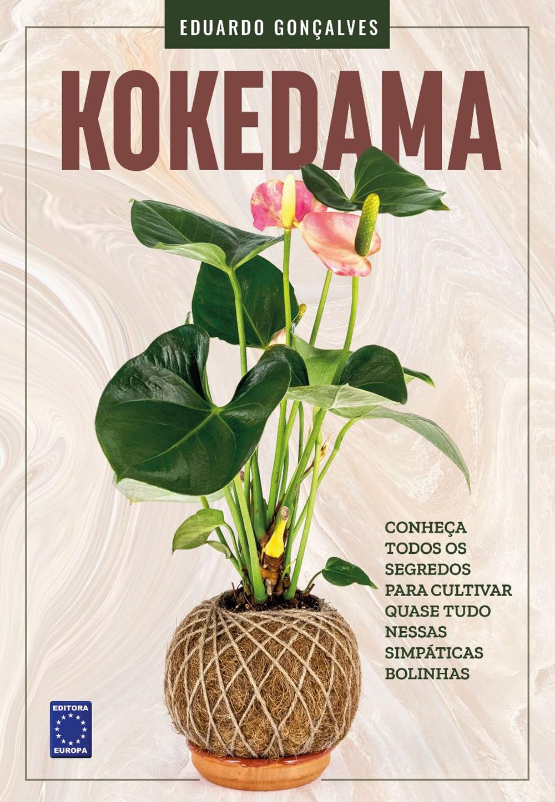
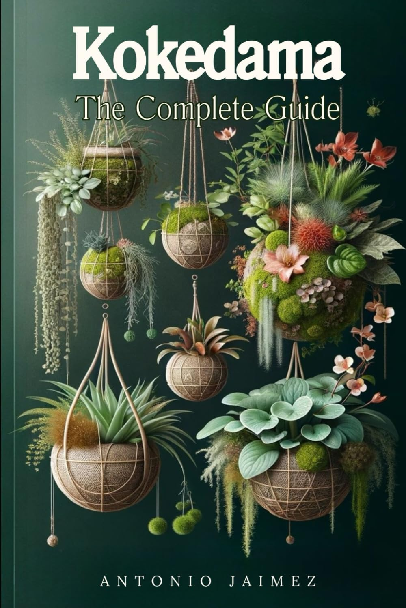
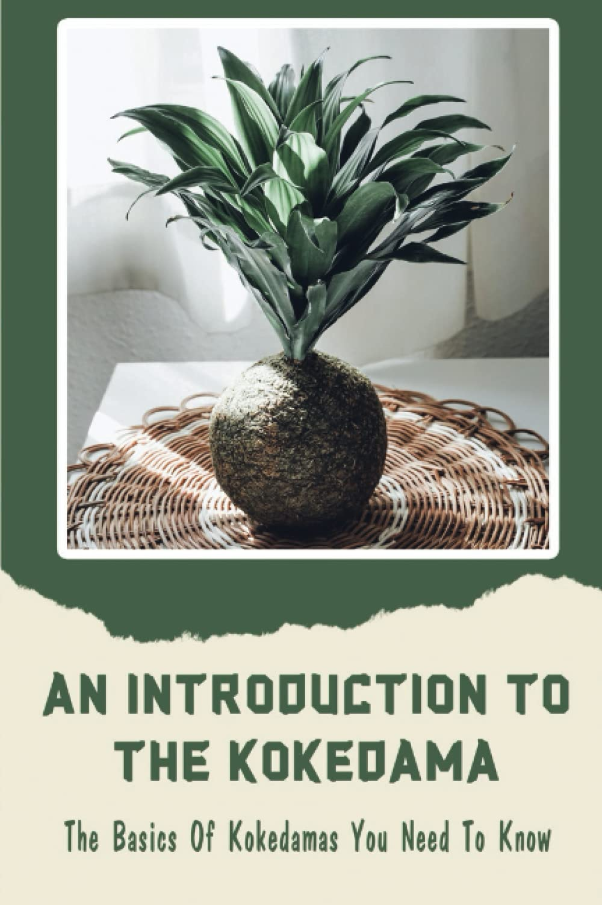
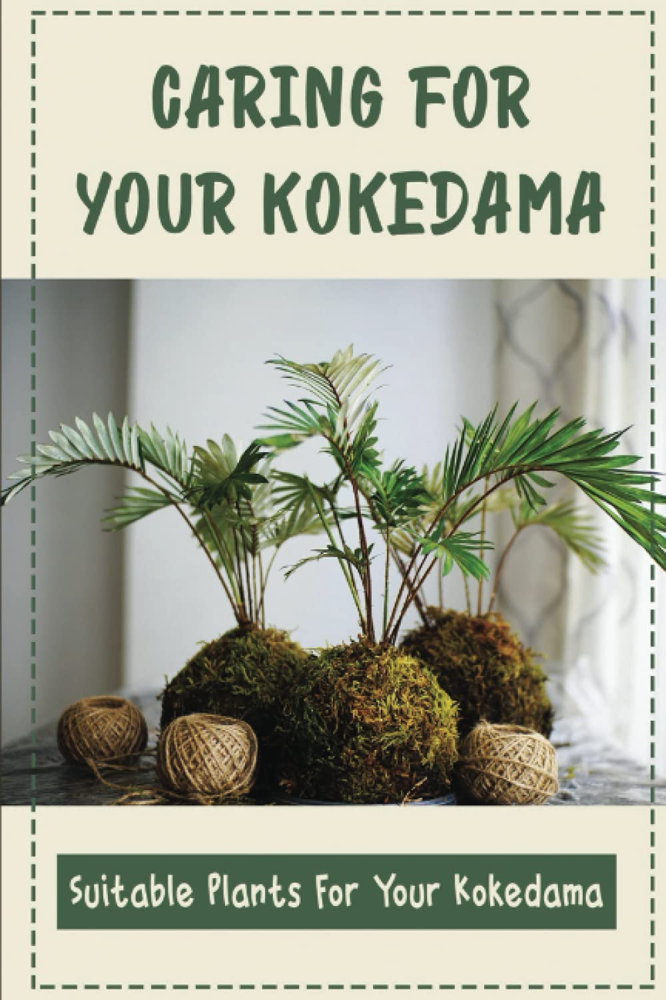
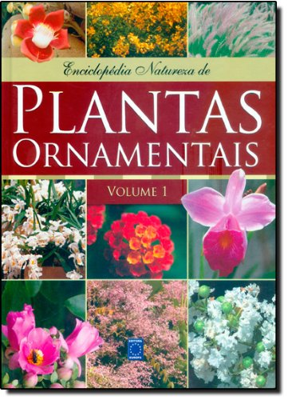

Leitura que inspira: livros sobre plantas e gatos
Descubra livros que educam, encantam e ajudam você a transformar seu lar num refúgio verde, inspirador e pet friendly — sejam eles físicos ou digitais.

Kokedama: Guia Completo
Passo a passo detalhado em português para criar, regar e exibir kokedamas com segurança e estilo.
ComprarKokedama: A Step-by-Step Guide
Tutorial ilustrado em inglês, ideal para quem prefere instruções visuais com fotos de cada etapa.
Comprar
Kokedama Complete Guide
Dicas de decoração, escolha de plantas e cuidados diários — perfeito para iniciantes curiosos.
Comprar
Introduction to Kokedama
Conceitos básicos, materiais necessários e erros comuns para evitar na primeira kokedama.
ComprarKokedama Sem Mistério
Livro digital nacional que ensina técnicas simples para transformar qualquer planta em kokedama charmosa.
Comprar
Caring for Your Kokedama
Guia focado em manutenção: poda, rega por imersão e variedades de plantas mais resistentes.
ComprarPlantas Tropicais: Guia Prático de Paisagismo Sustentável
Aprenda a projetar paisagens tropicais de forma prática e ecológica, ideal para ambientes externos e internos.
Comprar
Plantas Ornamentais – Volume 1
Referência completa para identificação e cultivo de plantas ornamentais — essencial para paisagistas e entusiastas.
ComprarPaisagismo Sustentável para o Brasil
Integre biodiversidade, economia de recursos e design no paisagismo brasileiro com enfoque sustentável.
ComprarA Vida das Plantas
Uma reflexão poética e científica sobre o universo vegetal, ideal para quem deseja ir além do cuidado básico com plantas.
ComprarCat Sense
Compreenda como os gatos pensam, sentem e se comportam. Leitura essencial para criar um ambiente seguro e feliz.
ComprarBraiding Sweetgrass
Uma obra que entrelaça sabedoria indígena, ciência botânica e amor pela natureza. Profundo e transformador.
Comprar